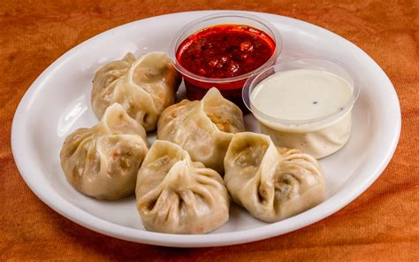

Momos

Momos are a popular street food in northern parts of India. These are also known as Dim Sum and are basically dumplings made from
flour with a savory stuffing. Learn to make these popular Tibetan recipe of easy vegetable momos from scratch with two folding
techniques. The recipe is vegan.
Ingredients
- 4 cups all-purpose flour
- 1 cup chopped fresh cilantro
- 1 cup chopped onions
- 4 tablespoons minced garlic
- 4 tablespoons minced peeled ginger
- 2 tablespoons ground cumin
How to make Momos
- Bring 3 inches of water in a large pot of water to a boil. You may also do this with a wok and steamer baskets.
- In a large bowl, mix together the ground beef, onion, spinach, garlic, 1 teaspoon ginger, green onion, cilantro and salt.
Place a spoonful of the filling onto a wonton wrapper; fold and crimp to seal. If necessary, wet the edges with water. Repeat
with remaining filling and wrappers.
- Set a steamer tray in the pot, and place the momos on the steamer. Steam over rapidly boiling water for 30 minutes. Serve with
the dipping sauce.
- To make the dipping sauce, mix together the soy sauce, rice vinegar, chili oil and grated ginger in a small bowl.